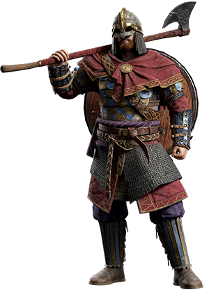

A elite Byzantina
Em 987, o imperador Basil II surpreendeu o traidor Bardas Focas, que se rebelou contra ele, ao recrutar um grupo de guerreiros vikings para sua guarda pessoal. Basil II havia feito um acordo com o príncipe Vladimir I de Kiev que em troca pelos envio de tropas pra Constantinopla, Vladimir se casou com a irmã do Imperador Romano.
Varegue, como eram chamados os vikings(principalmente Suecos). Depois de sua formão em 987, a Guarda Varegues se tornou a guarda pessoal dos imperadores bizantinos, servindo por quase 500 anos. Eles eram conhecidos por sua lealdade inabalável e habilidades de combate excepcionais.

Equipamento
| Armas | Armadura |
|---|---|
| Machado Dinamarquês | Cota de Malha |
| Espadas típicas escandinavas | Elmo cônico |
| Escudos Redondos | Gambeson(Armadura alcochoada, as vezes usada ao invês da malha) |
| Lanças | Proteções de aço para pernas e braços |